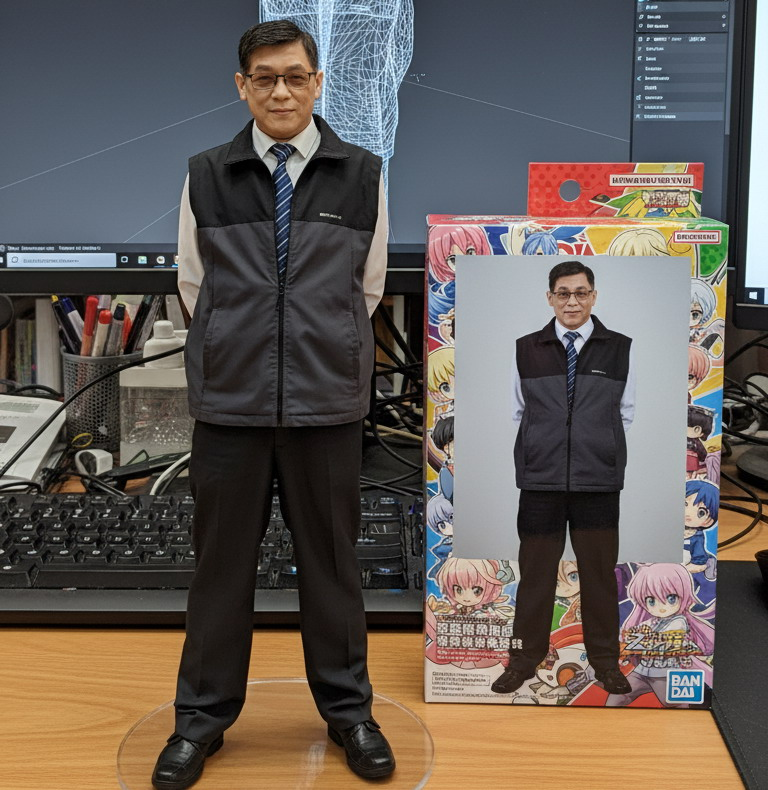
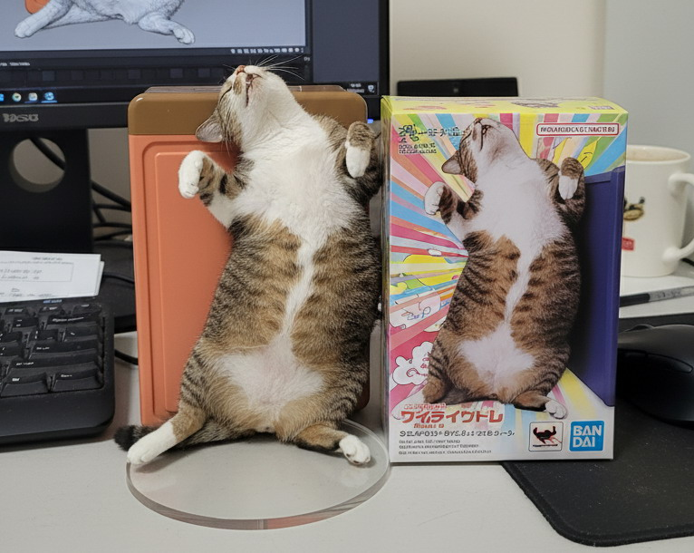
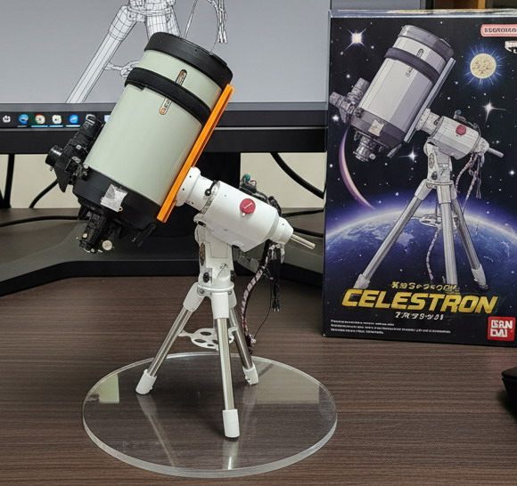
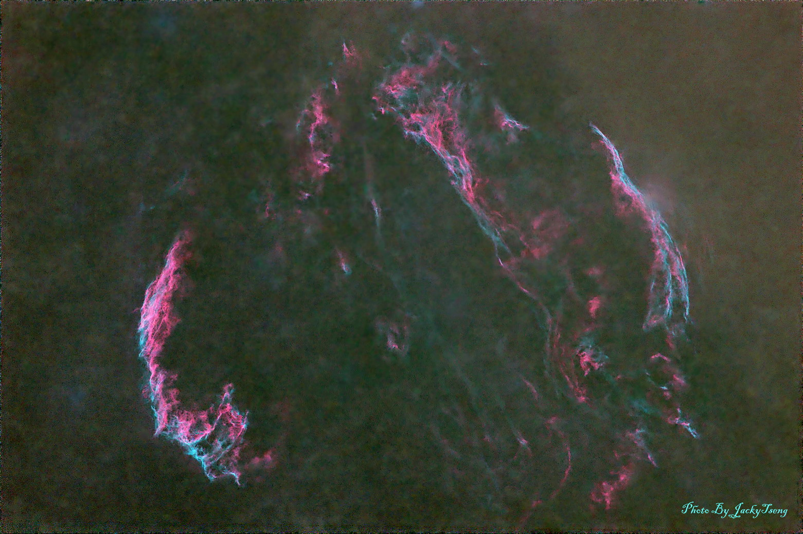

天文攝影個人品牌網站主視覺區（Hero 區占位）
這裡未來會放置一句話自我介紹、攝影定位（例如天文攝影師）、以及行動呼籲（例如瀏覽作品或聯絡我）。
之後會用 Section SDD 的 Prompt 產生正式文案與版面，再把整個 section 貼回來取代這一區。

關於我（之後會用 Section SDD 替換）
這裡目前是 About 區的占位內容，之後會用 Section SDD 的 Prompt 產生新的 section，請把新的 section 程式碼整段貼在這兩個註解中間，完全取代現在這一區。
未來會包含個人背景、攝影經歷與拍攝理念。

技能（之後會用 Section SDD 替換）
這裡目前是 Skills 區的占位內容，之後會用 Section SDD 的 Prompt 產生新的 section，請把新的 section 程式碼整段貼在這兩個註解中間，完全取代現在這一區。
未來會列出拍攝技巧、後製能力與使用設備。

作品集（之後會用 Section SDD 替換）
這裡目前是 Projects 區的占位內容，之後會用 Section SDD 的 Prompt 產生新的 section，請把新的 section 程式碼整段貼在這兩個註解中間，完全取代現在這一區。
未來會展示天文攝影作品、拍攝地點與拍攝說明。

聯絡我（之後會用 Section SDD 替換）
這裡目前是 Contact 區的占位內容，之後會用 Section SDD 的 Prompt 產生新的 section，請把新的 section 程式碼整段貼在這兩個註解中間，完全取代現在這一區。
Email：astro@example.com
電話：+886-900-000-000
GitHub：https://github.com/yourname
LinkedIn：https://www.linkedin.com/in/yourname